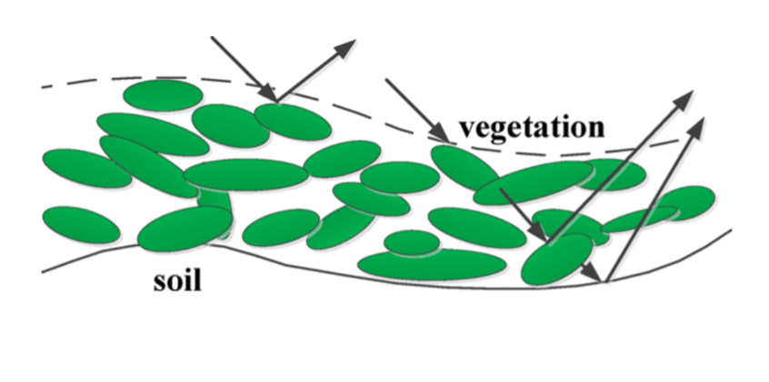
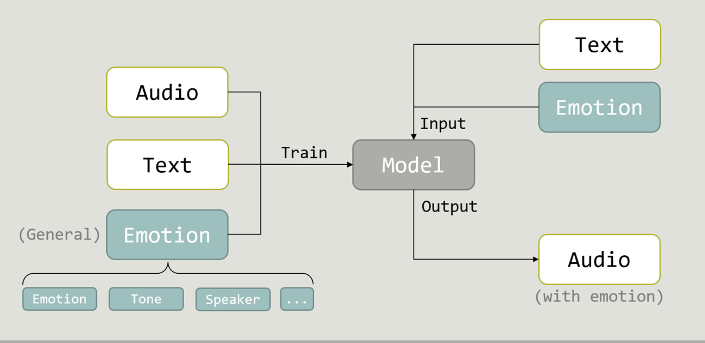
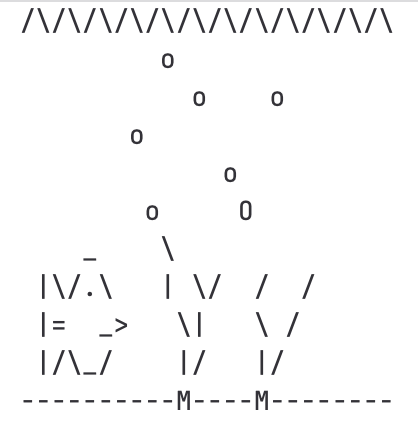
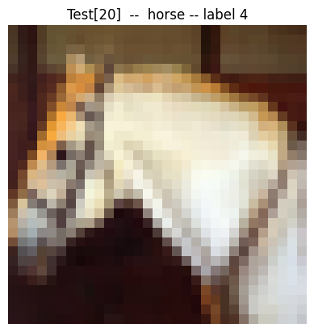
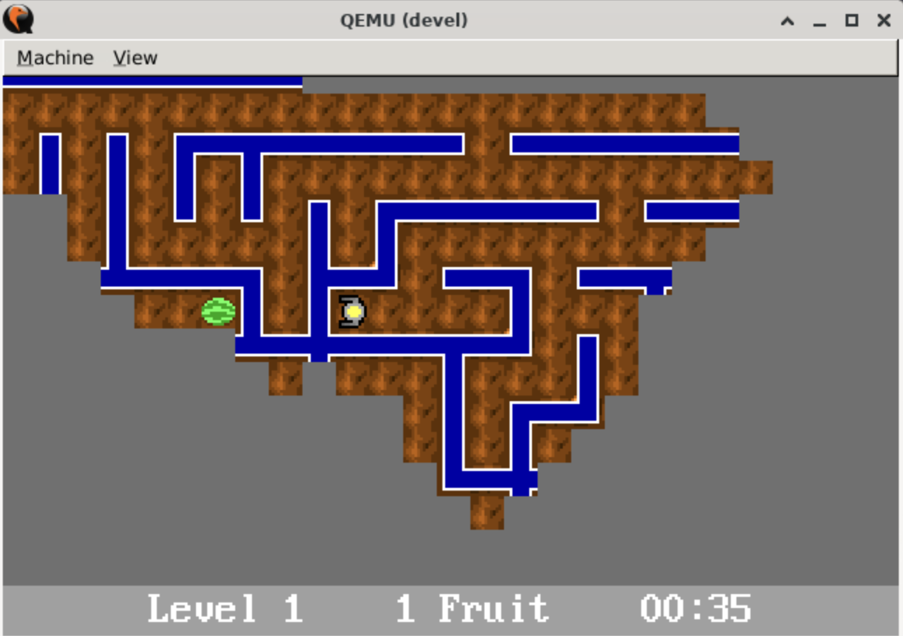
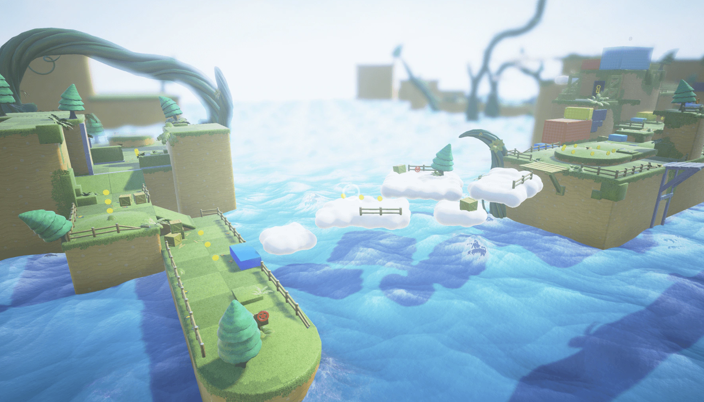

Research
I'm interested in Machine Learning, Generative AI, and GPU Acceleration.
|
|

|
GPU-Accelerated Computation for Electromagnetic Scattering of a Vegetation Model
- Designed a highly parallel GPU-based algorithm for the Monte-Carlo-based electromagnetic scattering of a double-layer vegetation model.
- Utilized MATLAB under Linux for phase matrices calculating and reduced running time using asynchronous data transfer as well as parallel random number generation in device memory offered by cuRAND library.
- Achieved a significant 93x speed-up with respect to pure-CPU serial computing approach.
|
|

|
The Multi-emotionality Improvement of Text-to-Speech Based on RNN
- Participated in weekly group meetings, delivering presentations, and engaging in discussions with other groups to explore fundamental concepts and topics in Deep Learning.
- Led presentations on Neural Networks and conducted in-depth study of articles in the field of Natural Language Processing (NLP).
|
Projects
I am familiar with C/C++, Python, SQL, and Linux.
|
|

|
LOS - A Light Linux-Like Operating System
- Developed a Linux-like operating system core from scratch that supports fundamental functionalities
including interrupts, system calls, scheduling, virtual memory, and a read-only file system, using C and x86 Assembly.
-
Supported a few devices such as keyboard, mouse, RTC; Applied common development tools including Git on teamwork version control and GDB for debugging.
|
|
|
A Video Inspiration Web App Based on the YouTube Trending Video Dataset
- Developed a MySQL relational database-centric web application deployed on Google Cloud Platform
(GCP), in a team of 4, with functionalities including sign up, log in, search by keyword, and personalized
inspiration folder.
-
Implemented advanced SQL queries and created Indexes to optimize query performance, resulting in up to
an 84% reduction in query time, in addition to basic CRUD operations (Create, Read, Update, Delete).
-
Designed and implemented the frontend using HTML, CSS, JavaScript, and Node.js.
|
|

|
A Graph Classifier based on Convolutional Neural Networks
- Employed neural networks, nonlinear and multi-layer extensions of the linear perceptron, to classify images into multiple categories.
- Matered the basics of Pytorch. Achieved an accuracy over 68% with limited traning set and constrains on neurons (defined by course CS440), which has been signicantly improved by 15% utilizing CNN and Dropout.
|
|

|
Fruit-Man: A Maze Game Demo
- According to VGA documentation, extended a video game consisting of about 4,000 lines of code with additional graphical features (status bar real-time update)
and a serial port device (tux controller from UIUC, like a gamepad).
- Using the pthread API, implemented direction control on the tux controller as well as the keyboard's keys, simultaneously receiving commands from both devices and updating game status affected by RTC.
|
|

|
Cloud Parkour: Demo of a 3D Platformer Game Level
- Designed a 3D platformer level game demo using Unreal Engine (UE) 5.3 fully with Blueprints.
-
Added mechanics like health system, collectible items, and created AI controlled pursuer enemies,
mortar enemies, player-enemy collisions for interaction.
|
|
{kind=link}